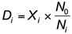

Other adjustments of time series
Many time series display the effects of more than one variable changing over time. For example, changes in the NZ price of an item sourced in the USA will reflect changes in the NZ$/US$ exchange rate as well as changes in the US$ price.
If an index is available which measures the effect of such a variable then its effect can be removed by a process of deflating. The idea is similar to that of detrending or deseasonalising a time series.
If Xi denotes the time series value at any time i and Ni and N0 denote the index values at time i and the base time respectively then the deflated value Di is given by

Correcting for inflation
This kind of adjustment is often used to take account of inflation. Although it is interesting to know that Tarakihi cost $25.43 per kg in 2008 but only $19.20 per kg in 2005, an increase in price is hardly surprising when wages and all other prices rose in that period.
The Consumer Price Index (CPI) is often used to adjust for inflation. Since the CPI was 953 in 2005 and 1044 in 2008 (based on a CPI of 1000 in June 2006), the price of Tarakihi in 2008 can be expressed in "2005 dollars" as:

In 2005 dollars, the price of Tarakihi rose from $19.20 in 2005 to $23.21 in 2008.
New Zealand Gross Domestic Product
The table below shows New Zealand’s Gross Domestic Product from 2002 to 2008 together with the CPI (Source: Statistics NZ website). Note that the CPI uses a factor of 1000 rather than 100 and has a base quarter of June 2006.
| New Zealand GDP ($millions) and CPI | |||||||
|---|---|---|---|---|---|---|---|
| 2002 | 2003 | 2004 | 2005 | 2006 | 2007 | 2008 | |
| GDP | 101,794 | 107,597 | 115,678 | 122,337 | 127,444 | 133,642 | 143,496 |
| CPI | 891 | 913 | 928 | 953 | 985 | 1010 | 1044 |
To deflate the GDP values, we will use the first year (2002) as our base year to express the deflated values as "2002 dollars". (It does not need to be the same base year that was used for the CPI.) The deflated GDP value for 2003 is

All deflated GDP values are shown in the table below
| New Zealand GDP ($millions) in 2002 dollars | |||||||
|---|---|---|---|---|---|---|---|
| 2002 | 2003 | 2004 | 2005 | 2006 | 2007 | 2008 | |
| GDP | 101,794 | 107,597 | 115,678 | 122,337 | 127,444 | 133,642 | 143,496 |
| Deflated GDP | 101,794 | 104,951 | 111,113 | 114,331 | 115,281 | 117,898 | 122,468 |
So although raw GDP rose by almost $43 million from 2002 to 2008, the deflated increase (i.e. removing the effects of inflation) was just under $21 million.
The time series plot below illustrates the difference between changes to the raw and adjusted GDP.
Note how the adjusted GDP flattened out between 2005 and 2006, indicating problems in the economy at that time.